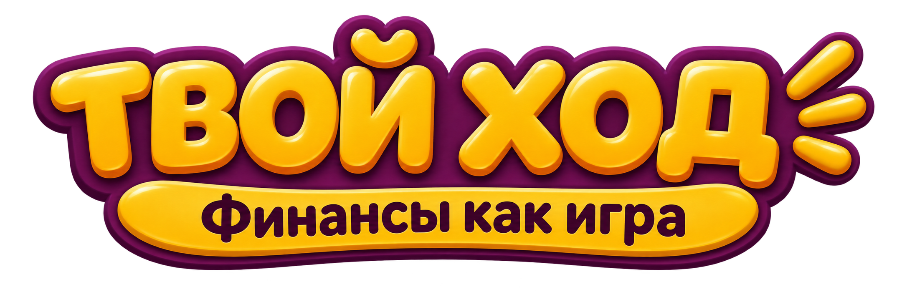

Твой ход
Месяц 8На счёте42 000 ₽
Как завершить ход 
Открыть игру ↗
ИГРА ПРО ДЕНЬГИ И ЖИЗНЬ
Зарплата пришла. Планы уже есть. А жизнь снова подкидывает выбор. Проживи свою финансовую историю — и посмотри, к чему приведут решения.
Ранняя версия · В браузере · Первый запуск — до 30 секунд
Пример игрового месяца: баланс, финансы и последствия выбора.
Можно поехать, отложить деньги или предложить встречу в городе.
Посмотреть последствияЗа месяц ты получаешь зарплату, решаешь события и видишь последствия.
Познакомься с доходами, обязательствами и целью своего персонажа.
Забери зарплату, разберись с двумя событиями месяца. Реши, что потратить, а что отложить.
Нажми «Завершить ход». Посмотри, как изменились финансы и насколько ты приблизился к цели.
В идеальном плане всё сходится. А в жизни приходится выбирать. Как поступишь ты?
Попробуй прямо здесь
В игре редко бывает одна «правильная» кнопка. У каждого решения — своя цена.
Упрощённый пример для лендинга. Суммы условные, результат не переносится в игру.
Поездка стоит 12 000 ₽, а ты собираешь подушку.
Выбери вариант, чтобы увидеть последствия.
За цифрами — жизнь
Двигайся к финансовой цели и следи за комфортом, связями и здоровьем персонажа.
Пример состояния персонажа в середине партии.
Это направление разработки, а не обещание сроков. Следующий шаг — после проверки предыдущего.
Ранняя версия: персонажи, игровые месяцы, события и цели.
Можно попробовать основу партии и увидеть последствия выбора.Понятный интерфейс, проверка расчётов, стабильности и темпа игры.
Дорабатываю первый опыт и собираю обратную связь.Постоянный сервер и возможность познакомиться с игрой без личного приглашения.
Запуск — после проверки готовности. Открытый демосервер ещё не запущен.Развитие событий, целей и баланса по тому, как люди играют на самом деле.
Приоритеты уточню по результатам демо и отзывам игроков.Перед первым ходом
Можно знакомиться с финансовыми решениями по ходу игры: выбирать, смотреть на изменения и пробовать снова. Это игра с элементами финансовой грамотности.
Нет. Игровой месяц завершается твоим действием, а не по таймеру. Можно играть в своём темпе и делать паузы.
Основной вход — браузер. Игру также можно установить как PWA в поддерживаемом браузере. Telegram — дополнительный канал.
Нет. Ты управляешь финансами игрового персонажа. Игра не подключается к банковскому счёту и не даёт персональных финансовых рекомендаций.
Сервер ранней версии засыпает, когда в игру давно никто не заходил. Первый запуск после паузы может занять 20–30 секунд, дальше обычно быстрее.
Игра развивается: баланс и интерфейс могут меняться, возможны ошибки. Если что-то непонятно или сломалось, расскажи нам через контакт внизу страницы.